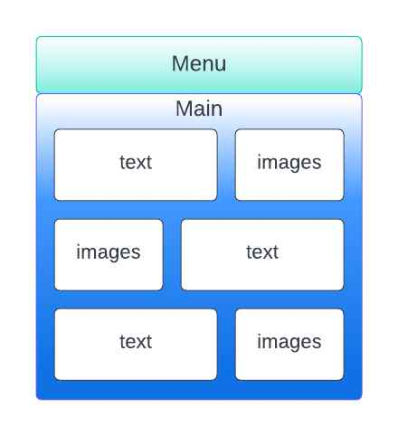
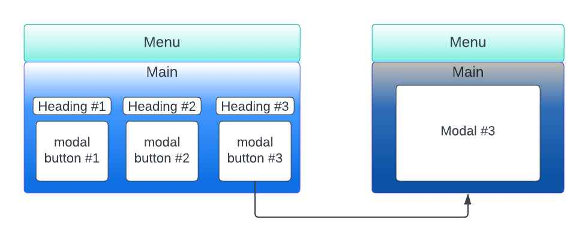
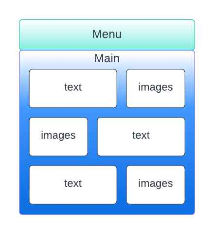
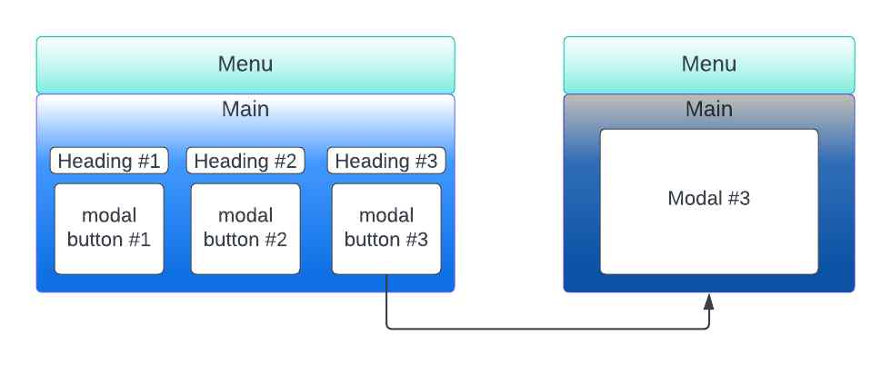

I initially storyboarded my design using my ipad, and the end result was exactly what I wanted. I feel like my design is visually appealing, as well as usable and well set out. I communicated all the content that I wanted to as well as having the room to practice my technical skills a bit as well. Overall I am fairly satisfied with the way my website turned out as it reflected my plans for what I wanted it to look like, and my execution was up to my standards.
2.
My website was designed to the assignment specification, 4 html files, 1 css and 1 js file, with a folder for images/other resources. In terms of page design, across all of the pages, I have my menu bar. The outer wrapper for this whole menu bar is a div with the class 'header', as it stays in a fixed position at the top of the page. I have two headings within this menu which are my name and student id. Then I have an unordered list which contains all of the buttons, I did this as a list so that the elements would be grouped together. The list object that relates to the page you are currently on has the class "selected" to tell the webpage to make the button look pressed, and visually indicate to the user what page they're on, and that they cant click on the button.
For the structure of my home page, I decided to use a main element to encompass the main text content. Within this element I have 6 divs; 3 groups of 1 div containing text and 1 div containing relevant images. I did this so that I could set the text divs to be either the 'left' or 'right' class in an alternating pattern to make my site more visually interesting. A 'left' div filled with text will line up with a 'right' div filled with images, and then vice versa for the next line. There are three areas which I decided to write about; cybersecurity, programming and robotics/electronics, and 3 groups of text/images respectively.

For my past page, I similarly have a main element. Within this element, I have 3 modals, for each of my areas of experience. These are initially hidden until opened by the relevant button. These modals (cyber, prog, and robotics) have respective ID's in order to manipulate their stylings and their modal functionality using css, and contain text about my past experiences within each category. Finally, I have a table element, with a row for headings, and a single row where each table data element contains the buttons to open each modal. I found it was easiest to style these buttons using their element names, and the parent table 'modaltable' (using the form: .modaltable > [element]), since all types of the same element within the table needed the exact same styling, reducing the need for me to write new class names.

For my future page, nested under another main element, I wrapped the first sentence in my paragraph with a span in order to highlight the text and make it italic, in order to draw the user's eye to this part of the text, and to help it act as a summary sentence for the rest of the paragrah.
3.
I tried to keep my design simplistic and modern, but not minimalistic by using some fun visual elements;
I chose my background gradient to look a bit like the ocean to suit some of the things I wrote about in the site.
I made a Windows XP themed menu bar with some fun buttons.
I kept the main content for all of the pages clean, but I tried to keep it a bit interesting with my layout.
I feel like my design was tied together by the menu bar which is consistent across pages, and displays what page you're currently on via a "depressed" button, and I thought that the way it stays fixed as you scroll gives the webpage a slightly more formal and well designed feeling.
I also used some neat technical effects to make my website appear more technically impressive and stylish to the user;
On my menu bar, I have my name, which will turn into my student ID when hovered over, and neat animated buttons which react to the user's mouse and clicks, as well as appearing depressed after you click on them.
On my main page, I had three separate image carousels. The carousel the user is currently looking at (closest to the middle of the page vertically) will begin autoscrolling, and will stop if the user hovers over it.
On my 'past' page, I used a similar technique as my menu bar to allow my 'modal buttons' to react to the user's mouse, and also used an opening animation for the modals just to make everything appear a bit smoother.
I think these technical aspects of my website enhance both the user's experience by making it less cluttered and more usable, as well as being visually impressive and giving the user the impression that the website was built by somebody who knows webdev well.
4.
Throughout my website, I made sure to include basic accessibility elements as part of my design. I made sure that all of my images have alt text for visually impaired people with screenreaders, and also for people with slower internet connections. I double checked that my website runs functionally the exact same without css and javascript for less capable devices. I also made sure that all of my text passed the WCAG text contrast check; https://webaim.org/resources/contrastchecker/. Finally, I also tried to keep my site design as self explanatory as possible, and free of clutter to make navigating easy, both mechanically and logically, for those who may have disabilities or impairments impacting their ability to move around more complex websites.
1.
I initially storyboarded my design using my ipad, and the end result was exactly what I wanted. I feel like my design is visually appealing, as well as usable and well set out. I communicated all the content that I wanted to as well as having the room to practice my technical skills a bit as well. Overall I am fairly satisfied with the way my website turned out as it reflected my plans for what I wanted it to look like, and my execution was up to my standards.
2.
My website was designed to the assignment specification, 4 html files, 1 css and 1 js file, with a folder for images/other resources. In terms of page design, across all of the pages, I have my menu bar. The outer wrapper for this whole menu bar is a div with the class 'header', as it stays in a fixed position at the top of the page. I have two headings within this menu which are my name and student id. Then I have an unordered list which contains all of the buttons, I did this as a list so that the elements would be grouped together. The list object that relates to the page you are currently on has the class "selected" to tell the webpage to make the button look pressed, and visually indicate to the user what page they're on, and that they cant click on the button.
For the structure of my home page, I decided to use a main element to encompass the main text content. Within this element I have 6 divs; 3 groups of 1 div containing text and 1 div containing relevant images. I did this so that I could set the text divs to be either the 'left' or 'right' class in an alternating pattern to make my site more visually interesting. A 'left' div filled with text will line up with a 'right' div filled with images, and then vice versa for the next line. There are three areas which I decided to write about; cybersecurity, programming and robotics/electronics, and 3 groups of text/images respectively.
For my past page, I similarly have a main element. Within this element, I have 3 modals, for each of my areas of experience. These are initially hidden until opened by the relevant button. These modals (cyber, prog, and robotics) have respective ID's in order to manipulate their stylings and their modal functionality using css, and contain text about my past experiences within each category. Finally, I have a table element, with a row for headings, and a single row where each table data element contains the buttons to open each modal. I found it was easiest to style these buttons using their element names, and the parent table 'modaltable' (using the form: .modaltable > [element]), since all types of the same element within the table needed the exact same styling, reducing the need for me to write new class names.
For my future page, nested under another main element, I wrapped the first sentence in my paragraph with a span in order to highlight the text and make it italic, in order to draw the user's eye to this part of the text, and to help it act as a summary sentence for the rest of the paragrah.
3.
I tried to keep my design simplistic and modern, but not minimalistic by using some fun visual elements;
I also used some neat technical effects to make my website appear more technically impressive and stylish to the user;
I think these technical aspects of my website enhance both the user's experience by making it less cluttered and more usable, as well as being visually impressive and giving the user the impression that the website was built by somebody who knows webdev well.
4.
Throughout my website, I made sure to include basic accessibility elements as part of my design. I made sure that all of my images have alt text for visually impaired people with screenreaders, and also for people with slower internet connections. I double checked that my website runs functionally the exact same without css and javascript for less capable devices. I also made sure that all of my text passed the WCAG text contrast check; https://webaim.org/resources/contrastchecker/. Finally, I also tried to keep my site design as self explanatory as possible, and free of clutter to make navigating easy, both mechanically and logically, for those who may have disabilities or impairments impacting their ability to move around more complex websites.